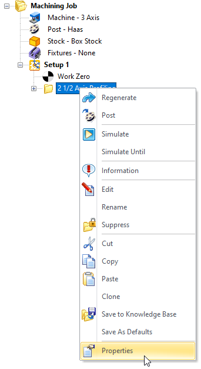
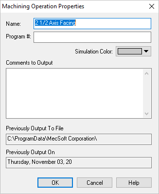

You can set the properties of a Operation by selecting it in the Machining Browser window, clicking on the right mouse button and selecting the Properties menu item.
 Select Properties from the Right-click Menu |
This will bring up the dialog that is shown below.  Dialog Box: Machining Operation Properties
Name Change the Name of the Machining Operation. Program # Specify Program # for the operation. This program number will be output during post processing of the operation. Simulation Color This allows you to specify a unique color for this operation during Simulation display. Refer to the Simulate tab Status Bar for setting the simulation to display by Mop (i.e., machining operation type). Comments to Output You can also include commands that will be saved with the operation. These comments will also be output during post-processing of the operation. This might be a good place to put in comments or instructions for the machine tool operator.
Previously Output To File This refers to the name of the external post-processed file that this particular operation was output to. Previously Output On This refers to the last time the operation was post-processed and the time the post-processing was performed. |